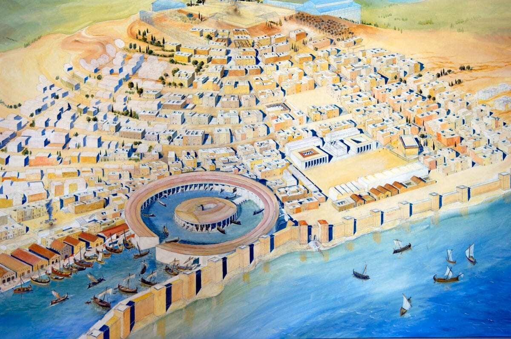
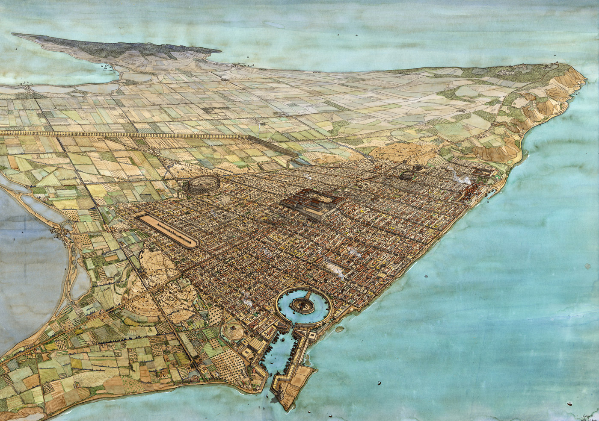
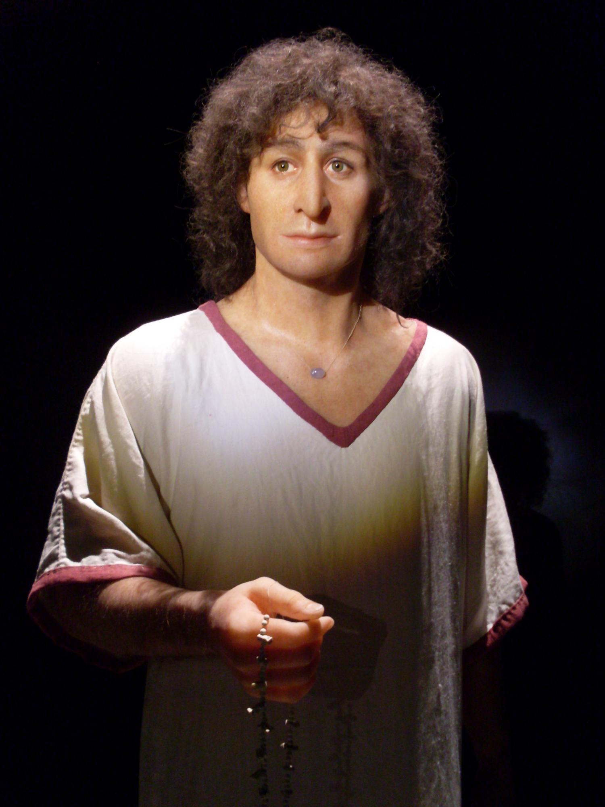

Carthage
Carthage was an ancient city on the eastern side of the Lake of Tunis in what is now Tunisia. Carthage was one of the most important trading hubs of the Ancient Mediterranean and one of the most affluent cities of the classical world. It became the capital city of the civilisation of Ancient Carthage and later Roman Carthage.
- Port of Carthage
 - The city of Carthage
 - A citizen of Carthage
